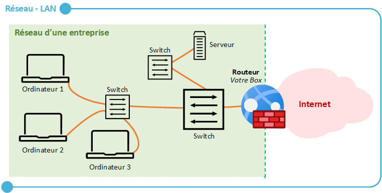
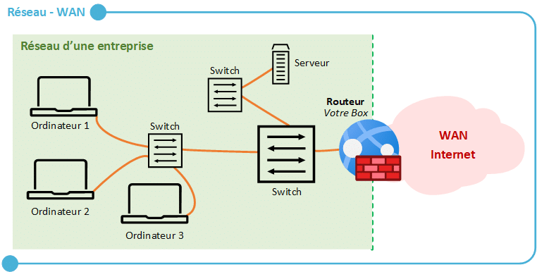
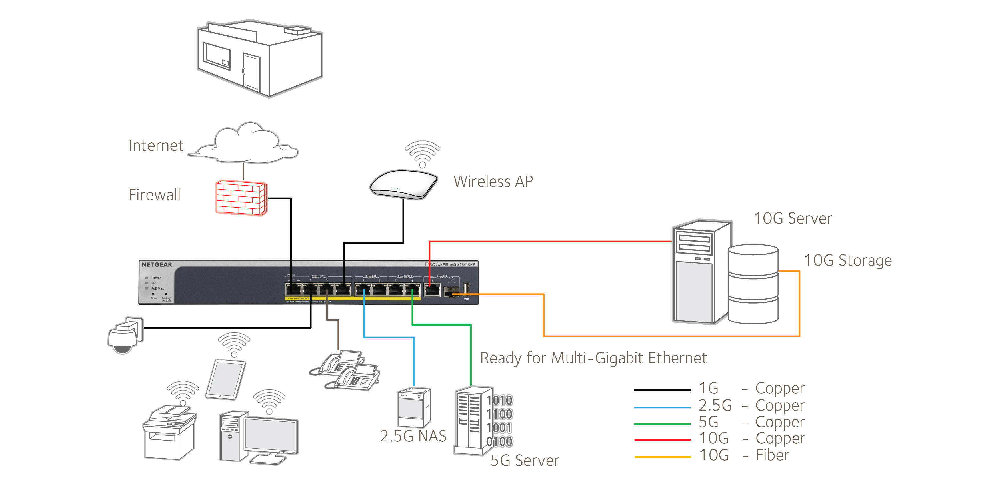

Cours Réseau – 16 Septembre 2025
Switch et LAN
Reprise des cours sur le switch, nécessaire pour la mise en réseau.
Le switch est un équipement réseau essentiel qui relie plusieurs périphériques (ordinateurs, imprimantes, serveurs…) au sein d’un même réseau local (LAN - Local Area Network). Il fonctionne en identifiant chaque appareil via son adresse MAC et en acheminant les données uniquement vers la machine concernée, contrairement au hub qui diffuse les paquets à tout le réseau.
⚙️ Rôle principal du switch
- Assurer la communication entre appareils d’un même réseau local
- Segmenter le trafic réseau pour éviter les collisions
- Améliorer les performances globales du LAN
Schéma : Switch ↔ Périphériques (LAN)
Les switches peuvent être :
- Non administrables : plug-and-play, utilisés dans les petits réseaux domestiques.
- Administrables : configurables (VLAN, sécurité, QoS), utilisés dans les entreprises.
NAS (Network Attached Storage)
Serveurs avec disques durs mis en réseau pour partager le stockage.
Un NAS est une solution de stockage centralisé accessible via le réseau. Il permet de sauvegarder, partager et accéder à des fichiers depuis plusieurs appareils connectés.
üîí Avantages du NAS
- Partage de fichiers entre utilisateurs sans dépendre d’un PC
- Accès distant possible via Internet (VPN, interface web)
- Protection des données par RAID (Redundant Array of Independent Disks)
- Automatisation des sauvegardes
Exemples de marques populaires : Synology, QNAP, Western Digital.
Dans un environnement professionnel, le NAS est souvent utilisé comme serveur de fichiers ou de sauvegarde central.
Hébergement Cloud
- AWS, Azure, Google Cloud
- Exemple : AWS développé par Amazon pour usage interne, puis proposé au public
L’hébergement cloud consiste à déployer ses applications, données et services sur des serveurs distants accessibles via Internet. Ces serveurs sont gérés par des fournisseurs spécialisés appelés hébergeurs cloud.
☁️ Principaux modèles de services cloud
- IaaS (Infrastructure as a Service) : machines virtuelles, réseaux, stockage (ex : AWS EC2)
- PaaS (Platform as a Service) : plateforme de développement complète (ex : Google App Engine)
- SaaS (Software as a Service) : logiciels accessibles via navigateur (ex : Gmail, Office 365)
Le cloud offre de nombreux avantages : élasticité, disponibilité 24/7, sauvegardes automatiques et réduction des coûts matériels. Cependant, il nécessite une bonne gestion des droits d’accès et de la sécurité des données (RGPD, chiffrement, authentification forte).
Équipements sensibles
Équipements critiques (informatique, hospitaliers…) protégés par onduleurs/batteries selon l’impact sur l’activité professionnelle.
Sécurité préventive à juger par le professionnel.
Un onduleur (UPS – Uninterruptible Power Supply) protège les équipements sensibles contre les coupures de courant et les surtensions. Il fournit une alimentation temporaire grâce à sa batterie interne, permettant de sauvegarder les données et d’éteindre proprement les systèmes.
⚡ Exemples d’équipements protégés par onduleur
- Serveurs informatiques
- Postes de travail critiques
- Équipements hospitaliers ou de sécurité
- Infrastructures réseau (switch, routeur, NAS)
Les onduleurs peuvent être :
- Offline : protection de base pour usage domestique
- Line-Interactive : ajustement automatique de la tension (usage bureautique)
- Online : protection maximale, alimentation constante via batterie (usage professionnel)
La sécurité préventive inclut aussi les mesures physiques (verrouillage des serveurs, contrôle d’accès) et logicielles (pare-feu, antivirus, surveillance réseau).
Accès à Internet
- Routeur connecté au fournisseur d’accès internet (FAI) pour accéder à Internet
- En général, le routeur est fourni par le FAI
- Chaque carte réseau possède une adresse MAC unique
- Le routeur a 2 cartes réseau : une entrée et une sortie. Le FAI utilise la MAC pour autoriser l’accès
- Le routeur sépare le réseau privé du réseau public
- On peut placer son propre routeur avant le FAI pour contrôle et protection supplémentaires
Le routeur est un élément essentiel dans toute infrastructure réseau : il agit comme une passerelle entre le réseau local (LAN) et Internet (WAN). Il analyse les paquets de données, détermine la meilleure route pour les transmettre, et assure la sécurité du trafic entre les réseaux.
üîê Fonctions principales du routeur :
- Attribuer des adresses IP aux périphériques du réseau via le service DHCP
- Diriger le trafic entre réseaux internes et externes
- Faire office de pare-feu pour protéger le réseau local
- Créer des sous-réseaux (VLAN) pour segmenter le trafic
Schéma LAN/WAN : privé/public
Hors sujet : distributions Linux sécurisées pour enfants
Règles de sécurité : ne jamais laisser de session ouverte, risque de sanction professionnelle
La box contient : routeur, switch, Wi-Fi, NAS optionnel et connecté à Internet
Les box grand public (Freebox, Livebox, Bbox, etc.) combinent plusieurs fonctions dans un seul appareil :
- Routeur – pour l’accès à Internet
- Switch – pour connecter plusieurs appareils Ethernet
- Point d’accès Wi-Fi – pour les connexions sans fil
- Serveur NAS intégré (optionnel) – pour le partage de fichiers
Serveurs en entreprise
- Un serveur = ordinateur qui rend des services au réseau
- Types de serveurs :
- Serveur de fichiers : partage de fichiers
- Serveur de messagerie : gestion des emails
- Serveur d’impression : gestion des imprimantes et autorisations
- Serveur web : hébergement des applications
- Serveur de bases de données (BDD) : stockage des données
- Le serveur répond aux requêtes HTTP pour diriger vers la bonne URL
En entreprise, les serveurs sont le cœur du système d’information. Ils permettent de centraliser les ressources et de garantir la disponibilité des services. Un même serveur peut exécuter plusieurs rôles, ou bien ces rôles peuvent être répartis sur plusieurs machines pour des raisons de performance ou de sécurité.
üíª Exemples concrets d‚Äôusages :
- Un serveur web héberge les sites internes (intranet) et externes.
- Un serveur de fichiers permet le travail collaboratif sur un espace partagé.
- Un serveur de messagerie (Ex : Microsoft Exchange, Zimbra) gère les emails de l’entreprise.
- Un serveur de base de données (MySQL, PostgreSQL, SQL Server) stocke et organise les informations.
Chaque serveur est relié au réseau local (LAN) et doit être protégé par des pare-feux, des sauvegardes régulières et une politique stricte d’accès utilisateurs.
Sauvegarde et protection des données
- Règle 3-2-1 : 3 sauvegardes sur 3 supports, 2 localement, 1 externe/offline/cloud
- Sauvegarde régulière selon moyens et besoins
- Délais de remise en état : aussi rapide que possible
- Selon priorité de l’entreprise, infrastructures de stockage doublées ou plus
La sauvegarde est un pilier de la sécurité informatique. Elle permet de restaurer les données en cas de panne, de suppression accidentelle, de vol ou d’attaque (ex : ransomware).
üì¶ Bonnes pratiques de sauvegarde :
- Planifier des sauvegardes automatiques quotidiennes ou hebdomadaires
- Tester régulièrement la restauration des données
- Stocker une copie hors ligne (disque déconnecté ou coffre fort numérique)
- Protéger les sauvegardes par chiffrement
Les entreprises utilisent souvent des solutions comme Veeam, Acronis, ou Bacula pour automatiser ces processus. Le délai de reprise après sinistre (RTO) et la perte maximale de données tolérée (RPO) sont des indicateurs clés pour définir la stratégie de sauvegarde.
Adresses IP
Inventées aux États-Unis au début d’internet pour permettre la communication réseau via TCP/IP :
- TCP : contrôle nombre et taille des paquets
- IP : identifie le destinataire sur le réseau
- Le routeur connecté à 2 réseaux nécessite IP sur entrée et sortie
- IP peut être :
- Statique : toujours la même
- Dynamique : attribuée automatiquement via DHCP
Une adresse IP (Internet Protocol) est un identifiant unique attribué à chaque appareil connecté à un réseau. Elle permet d’acheminer les paquets de données jusqu’à leur destination, comme une adresse postale sur Internet.
üåê Deux versions d‚Äôadresses IP :
- IPv4 : format classique (ex : 192.168.0.1) – 4,3 milliards d’adresses disponibles
- IPv6 : format étendu (ex : 2001:0db8:85a3::8a2e:0370:7334) – quasi illimité
Le protocole TCP/IP combine :
- TCP (Transmission Control Protocol) : découpe les données en paquets et assure leur livraison complète
- IP (Internet Protocol) : gère l’adressage et l’acheminement des paquets sur le réseau
Schéma simplifié du fonctionnement TCP/IP :

Les adresses IP sont essentielles pour la communication entre appareils.
Les réseaux domestiques utilisent souvent des adresses privées (192.168.x.x, 10.x.x.x…), traduites vers Internet via la fonction NAT (Network Address Translation) du routeur.